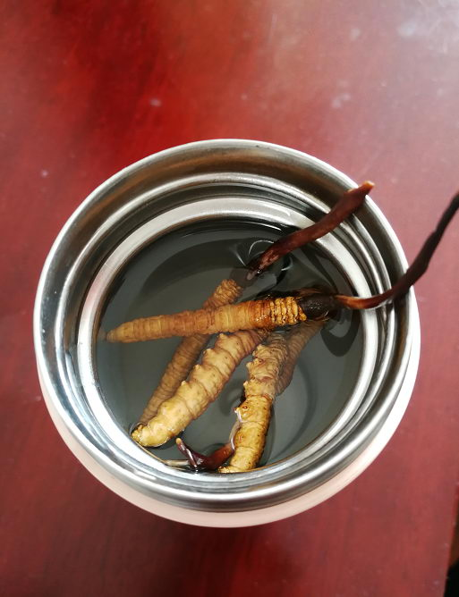

加微信号:
gdt197
(长按复制)
加微信号:
gdt197
(长按复制)
长按识别二维码
领取2999虫草大礼包
资深虫草人全面解读
冬虫夏草功效作用
2018-07-20
来源：健康栏目
微信号：gdt197（长按复制）
点击进入功效讲解直播
西藏那曲资深虫草师全面解读
大家好！我叫强巴，西藏那曲资深虫草人。家里三代行医，从小与中药相伴，10年前有缘来到西藏那曲，接触到纯正野生的冬虫夏草，本着将那曲野生冬虫夏草带给有需要人的愿心，开启西藏那曲虫草搬运工的人生。
冬虫夏草，别称"冬虫草"，是冬虫夏草菌和蝙蝠蛾科幼虫的复合体，也是“中药之王”。
点击下方绿色选项卡可切换查看更多信息↓↓↓
1.冬虫夏草开水泡服
用法：取冬虫夏草3-4根左右，清水冲洗，放入杯中(保温杯最佳)，用90摄氏度左右开水冲泡，饮用若干次直至睡前，将虫草全部咀嚼吃入。
特点：虫草功效及本身质量不衰减，针对性强，人体吸收较好。
适用：年老体虚，抗癌、防癌，患有肾、肺、及糖尿病或久病及术后患者。
2.虫草甲鱼汤
用法：取冬虫夏草10根左右，甲鱼500克生晒参2克，香菇10枚，海带若干，人参果5克，调料适量。
制法：将甲鱼宰杀洗净，切块，海带泡发洗净切段，香菇洗净，然后和虫草及其他原料一并入锅，加水和调料，隔水蒸熟服用。
功效：可增强防癌免疫力，适用于各种癌症的早期治疗。
3.雄鸭虫草汤
配方：老雄鸭一只，虫草20根，野生枸杞20克，生姜10克，盐、葱、味精适量
用法：将鸭去杂、洗净剁块，与虫草及其他原料炖煮至熟烂，服用。
主治：男性精少，精子畸形
4.冬虫夏草粥
用料：梗米一两，虫草10根(需将虫草碾成粉状)，白芨粉10克，冰糖适量
功效：补肺益肾，久咳劳嗽痰血
制法：将洗净的梗米，冰糖放入开水锅中熬成粥，再将虫草粉和白芨粉均匀的撒入粥中稍煮片刻，关火焖5分钟即可。
5.冬虫夏草鸡
用料：冬虫夏草1-2克，乌骨鸡一只
制法：去毛及内脏，炖服
功效：补肾助阳，适用于头脑昏沉，记忆力减退，心悸怔忡，视物昏花，体虚易感冒，多汗怕冷等症。
1.处在西藏那曲虫草的虫草表面是黄净的，不管是个头大小，它们的色泽度都是比较均匀的。而其他地区的虫草，色泽度会有些淡有的地方会偏红或者偏灰或者是白润色。
2.西藏那曲虫草在体型上也呈现出比较圆润，整体看上去很粗肥，尾宽均为5cm, 其他地区的虫草体型会比较瘦小。
3. 西藏那曲虫草自带有种酥油的香味，这是那曲虫草独有的自带草味，其他地区的虫草，草味没有那曲虫草那么浓。
观：八对足、头部颜色浅、消化腺、缺一不可
尝：细嚼甘甜中路带一咸，吃完口中留有余香
嗅：稍带有虫体的腥燥味及掺杂着草菇的香气
微信号： gdt197 (长按复制)
虫草具有很高的食疗功效
不同方法使用，功效不同
针对不同人群、选择不同吃法
可以加我微信详细了解
我是西藏那曲资深虫草师
添加微信，确认购买信息。
24小时内发货，全国包邮。
在收到货后如有任何不满意，我们支持无理由退换货；不满意:退 / 不喜欢：退 / 不想要：退 / 品相不好：退 /
添加微信，如有什么问题，我们都可以为您解答！
凡是在我们这购买过的，将成为我们的VIP会员，享受活动优惠价,如有优惠活动，我们将会第一时间通知您。
微信号： gdt197 （长按复制）
认真对待每位客户
严格把关产品质量
为每一位有需要的人保驾护航
添加微信了解更多详情
我是西藏那曲资深虫草师
如果您在虫草方面，或其他相关方面有需要了解咨询的，都可以随时在微信里和我联系，我将会很乐意为您效劳。
加微信号:
gdt197
(长按复制)
热门评论
Demo
2018-07-30
终于等到楼主发帖分享啦，顶一个！！我们家一直比较注重健康养身，吃楼主家的野生虫草2年了，滋补效果很好，家里老人身体好了很多！良心卖家，赞赞赞！
推荐 975 / 回复
海
2018-07-30
刚加了微信，长知识！虽然还没买虫草，可是跟店家咨询了很多关于虫草的知识，店家人很好，很有耐心，强烈推荐需要虫草的朋友加他微信。
推荐 1209 / 回复
暗夜
2018-07-30
懂行的朋友说是真品，这个价格很划算
推荐 695 / 回复
漫漫
2018-07-30
爸爸的身体不太好，买回去送给爸爸，希望他用了对身体有好处。。。
推荐 756 / 回复
往事如风
2018-07-30
经常吃虫草，所以对虫草的品质很挑剔，一般认准了一家就不会换的,你家的诚信跟品质一直都保持得很好，价格也算比较实惠，性价比也高，包装很用心，有需要的朋友可以放心购买
推荐 1005 / 回复
人生如戏
2018-07-30
虫草大小均匀，是正品，干净饱满，口感很好，有菌菇味，价格实惠很划算，卖家服务很划算
推荐 293 / 回复
syh
2018-07-30
之前晚上一直失眠，用了这个后就再也没有了，睡得很踏实，失眠的朋友可以试下。
推荐 857 / 回复
华少
2018-07-30
大小均匀，饱满圆润，气味正宗，应该是真的，下次会回购
推荐 703 / 回复